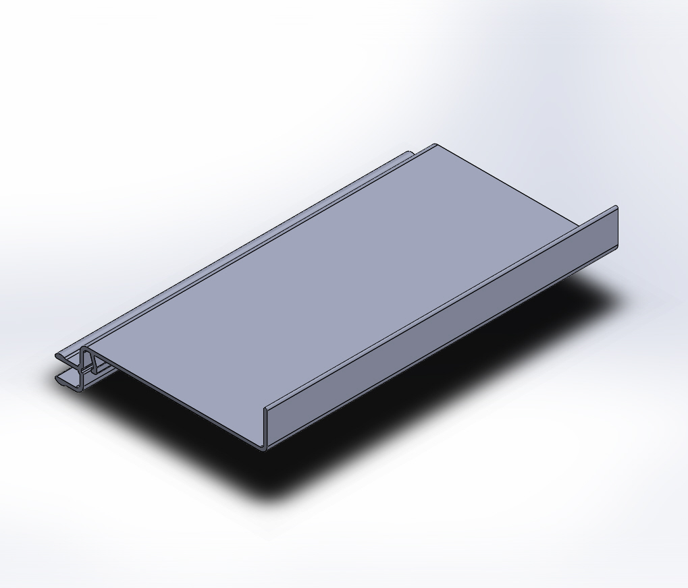

Perfil de alumínio
FE-0202 — Bagete Passante
exclusivo — Pele de vidro
Dados técnicos
| Peso | 0,247 kg/m |
|---|---|
| Superfície — área | 94,04 mm²/mml |
| Superfície — perímetro | 185,67 mm²/mml |
| Inércia Jx | 2.023,64 mm⁴ |
| Inércia Jy | 39.491,86 mm⁴ |
Divergencias aplicadas (ficha individual prevalece): peso_kg_m: YAML anterior 0.2699. Jx/Jy calculados do DXF limpo (cad-fonte/ARQUIVOS/CALCULO) em 2026-10-28, método validado no SS-108. Wx, Wy e centroide calculados do mesmo DXF, na orientação da ficha.
Usado em:
SkinGlass